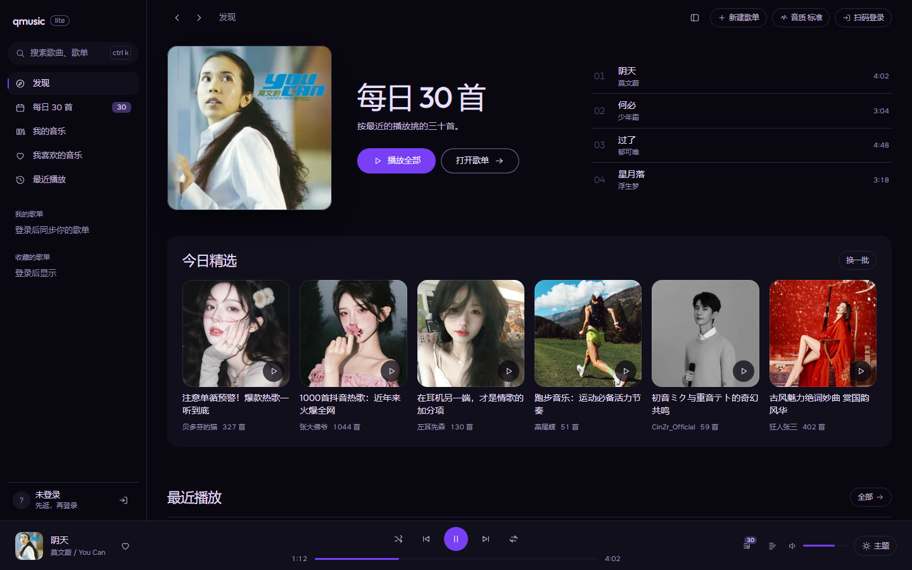
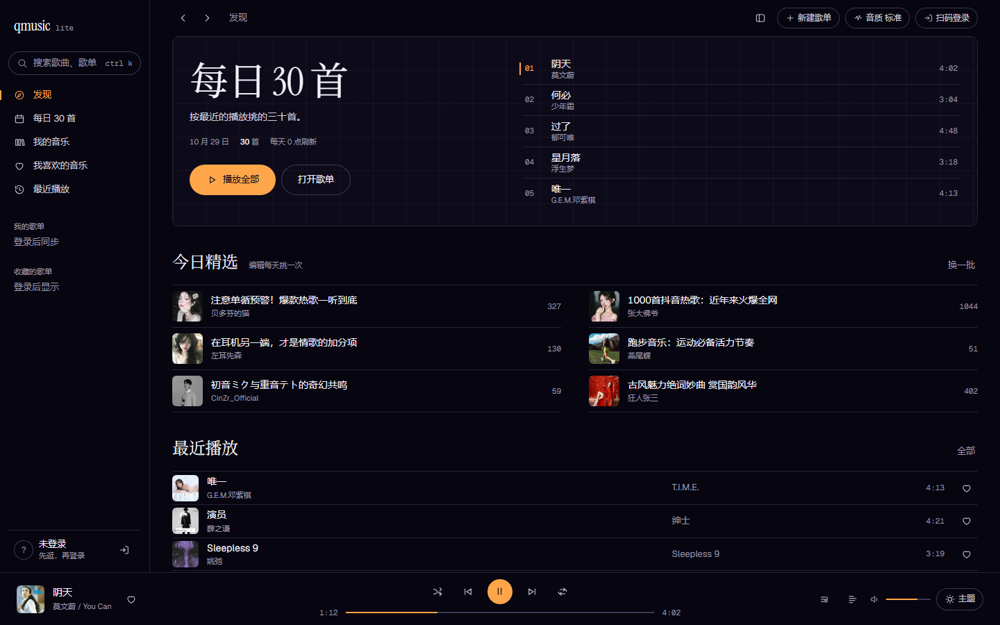
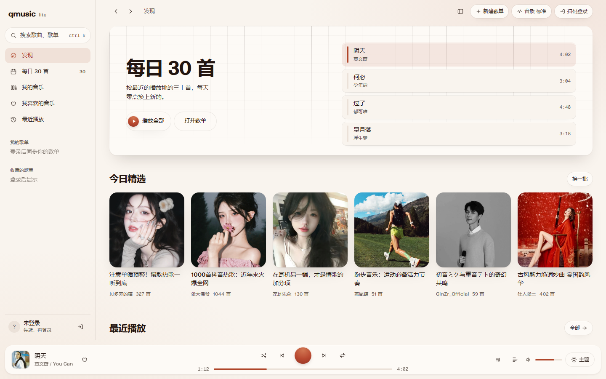

方向 01
紫外线
近黑的紫调底色，几何无衬线全部小写，发丝分栏，一枚饱和紫只出现在播放与进度上。像一台夜里开着的唱机。
打开全屏预览同一份内容、同一套外壳，三种视觉系统。点开任意一个看全屏，再回来告诉我选哪个；选定后我再把它接进 React。

方向 01
近黑的紫调底色，几何无衬线全部小写，发丝分栏，一枚饱和紫只出现在播放与进度上。像一台夜里开着的唱机。
打开全屏预览
方向 02
紫黑夜色里的小写衬线标题，蓝图网格托住整张每日歌单，黄铜是唯一的信号色。最像一本夜间值班笔记。
打开全屏预览
方向 03
暖白纸面与淡钢琴卷帘网格，每日歌单是四条浮起的片段，播放条像合上的琴盖浮在底部。陶土色是唯一实心。
打开全屏预览三个方向都使用应用当前接口取回的真实歌单与歌曲（2026 年 10 月 29 日），封面来自音乐平台的图片服务；侧栏保持真实的未登录状态，没有虚构的账号、歌单或数据。预览在 1440 宽下设计，1280 宽同样成立。